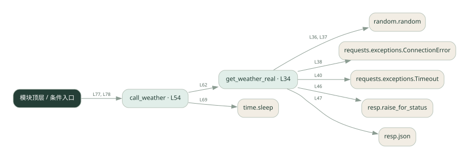

1-8 · 全课程第 8 节
工具超时与重试
robust_tools_real.py
源码快照 1a84b0772873 · 静态解析 · 2026-09-10
01 / 要完成的事
给天气工具增加失败重试、超时处理和结果缓存。
02 / 为什么要做
外部请求会失败或重复发生，不能让一次偶发错误终止整个流程。
03 / 当前代码状态
通过 requests 访问真实天气服务，HTTP 请求带 timeout；与随机失败的本地 get_weather 模拟版用途不同。
存在外部服务或模型依赖；执行前需按源文件配置依赖和凭据，可能联网或产生 API 费用。 本次只做静态解析，没有运行练习，也没有替你填写或修改原代码。
04 / 调用图
打开大图 ↗实线：源码中的直接调用；虚线：函数引用/注册、动态调用或按方法名推断的候选。L 是调用所在源码行号。箭头不表示执行顺序或每次必经；分支、循环、异步调度及框架内部调用需结合源码。灰色是外部/未解析目标，橙色是动态分发；省略 print、len 和常规容器操作以减少干扰。孤立函数可能尚未接入。

先从 模块入口 出发，沿箭头找到本文件函数，再查看外部调用或动态分发。右侧调用清单保留所有静态调用点，能回到原文件逐行对照。
05 / 函数定位
| 函数 / 定义行 | 职责（源码注释） | 内部调用 |
|---|---|---|
get_weather_realL34 | 以源码函数体为准；下列调用展示其依赖。 | random.random, requests.exceptions.ConnectionError, requests.exceptions.Timeout, requests.get, resp.raise_for_status, resp.json |
call_weatherL54 | 以源码函数体为准；下列调用展示其依赖。 | range, get_weather_real, print, time.sleep |
这样做的优点
临时故障可恢复，相同查询命中缓存时减少重复请求。
代价与局限
重试增加延迟；按城市缓存会过期。缓存查询结果不等于保证写操作幂等。
适用场景
只读查询、可以安全重复的工具。
不宜直接照搬
扣款、发信等有副作用的操作，除非另有业务幂等机制。
动手检验理解
让第一次请求失败，检查重试次数；再查同城，检查缓存是否省去请求。
有未实现位置时先预测，再补齐验证。能启动不等于逻辑正确。
查看全部 17 个静态调用 / 引用点
| 调用方 | 目标 | 源码行 | 类型 |
|---|---|---|---|
| get_weather_real | random.random | 36 | 调用 |
| get_weather_real | random.random | 37 | 调用 |
| get_weather_real | requests.exceptions.ConnectionError | 38 | 调用 |
| get_weather_real | requests.exceptions.Timeout | 40 | 调用 |
| get_weather_real | requests.get | 45 | 调用 |
| get_weather_real | resp.raise_for_status | 46 | 调用 |
| get_weather_real | resp.json | 47 | 调用 |
| call_weather | range | 60 | 调用 |
| call_weather | get_weather_real | 62 | 调用 |
| call_weather | print | 66 | 调用 |
| call_weather | print | 68 | 调用 |
| call_weather | time.sleep | 69 | 调用 |
| <模块入口> | print | 76 | 调用 |
| <模块入口> | print | 77 | 调用 |
| <模块入口> | call_weather | 77 | 调用 |
| <模块入口> | print | 78 | 调用 |
| <模块入口> | call_weather | 78 | 调用 |